Contexte et objectif
Une alerte de supervision indique qu'il y a un problème, mais pas pourquoi. L'objectif était d'aller plus loin : quand Zabbix détecte une anomalie, un agent IA collecte les vraies données du serveur, analyse la situation et envoie à l'administrateur un diagnostic avec une marche à suivre, sans intervention humaine dans la boucle.
Construction pas à pas
- 01/06 – 05/06 — recherches sur les agents IA, machine virtuelle de test, installation de Flowise pour prendre l'outil en main.
- 08/06 – 10/06 — Ubuntu Server installé sur un PC physique relié au réseau ; premier agent capable de lire l'espace disque, la RAM et les températures.
- 11/06 – 12/06 — supervision de la base du portail captif par l'agent, puis premier test de Zabbix.
- 15/06 — connexion de l'agent Flowise à Zabbix.
- 19/06 – 22/06 — e-mail d'alerte contenant l'analyse de l'agent, puis mise en forme pour une lecture rapide.
- 23/06 — l'agent utilise désormais les vraies valeurs des serveurs pour un diagnostic précis.
- Fin juin — nouveaux tests de bout en bout : le journal des actions de Zabbix montre l'alerte envoyée à l'agent (« Sent »).
Architecture
| Composant | Détail |
|---|---|
| Serveur Flowise (Ubuntu Server) | Zabbix 7.0 et Flowise en Docker, API de supervision, relais mail |
| Serveur Database (Ubuntu Server) | Portail captif, base de données, API de supervision |
| OPNsense 26.1.10 | Pare-feu supervisé par un agent Zabbix |
| Agent IA | Flowise, Tool Agent avec le modèle llama-3.3-70b (Groq) |
| Scripts Python Flask | Métriques CPU, RAM, disque, température (ports 5000 et 5001), relais e-mail (port 5002) |
Chaîne d'alerte
- L'agent Zabbix détecte un CPU au-dessus de 90 % pendant 5 minutes.
- L'action Zabbix déclenche un webhook (script JavaScript) qui appelle l'API Flowise.
- L'agent IA interroge l'API de métriques, puis se connecte en SSH au serveur concerné.
- Le modèle produit un diagnostic principal, des causes alternatives et une marche à suivre, en français.
- Le relais Flask envoie un e-mail HTML aux couleurs de LOXYS à l'administrateur.
Supervision du réseau avec Zabbix
- Serveur Zabbix 7.0 déployé avec Docker Compose (base PostgreSQL 16, interface web sur le port 8080).
- Agents Zabbix sur les deux serveurs Ubuntu et sur OPNsense (plugin
os-zabbix7-agent), avec les modèles Linux et FreeBSD. - Déclencheurs sur l'utilisation du CPU, tableaux de bord et graphiques par hôte.
- Continuité — les scripts Python tournent en services systemd avec redémarrage automatique : si un composant plante, la supervision ne s'arrête pas avec lui.
Limite : la borne UniFi n'a pas pu être supervisée, car son contrôleur demandait un processeur compatible AVX que le serveur n'avait pas.
Habilitations : donner le minimum de droits
Compte Zabbix flowise-bot
Les alertes n'étaient jamais transmises, sans aucune erreur visible. En cherchant, j'ai trouvé que l'utilisateur flowise-bot avait la permission None sur tous les groupes d'hôtes : Zabbix bloquait les notifications en silence.
J'ai ajouté un accès en lecture seule sur les groupes Databases, LOXYS Servers et Zabbix servers, puis vérifié dans le journal des actions que les envois passaient bien à l'état « Sent ».
Compte SSH restreint flowise-diag
Donner un accès SSH à une IA sur un serveur est une décision qui doit se justifier. J'ai créé un compte dédié qui ne peut rien modifier :
| Mesure | Effet |
|---|---|
| Aucun droit sudo | Pas d'administration possible |
| Clé Ed25519 dédiée | Distincte de la clé de l'administrateur |
Commande forcée dans authorized_keys | La clé ne peut lancer qu'un script de diagnostic |
no-pty, no-port-forwarding | Pas de shell interactif, pas de tunnel |
| Script en lecture seule | CPU, mémoire, disque, processus, connexions, journaux d'erreurs |
Groupe adm | Lecture des journaux système uniquement |
Vérification — à la connexion, le script s'exécute, renvoie les données puis ferme la session ; aucune autre commande n'est possible. Même si l'agent ou sa clé étaient compromis, ils ne pourraient rien modifier sur le serveur.
Déploiement, tests et accompagnement
Tests d'intégration
- Stress tests — charge CPU générée avec
stress-ngsur le serveur Database : l'alerte « High CPU utilization » s'est déclenchée à 97,68 %, et l'agent a identifié les vrais processusstress-ng-cpugrâce au SSH. - Webhook — tests de la chaîne Zabbix → Flowise → e-mail, délai du script porté à 60 secondes.
- API — appels
curlpour vérifier que l'agent appelle bien ses outils.
Déploiement
Zabbix et Flowise en conteneurs Docker, scripts Python et relais mail en services systemd, agents Zabbix sur les trois hôtes.
Accompagnement
Les e-mails ont été retravaillés pour qu'un technicien comprenne le problème en quelques secondes, et j'ai rédigé une documentation technique complète de l'installation pour LOXYS.
Difficultés et solutions
| Problème | Solution |
|---|---|
| Les outils de l'agent recevaient une entrée vide | Schéma des outils remis à [] directement dans la base SQLite de Flowise |
| L'agent inventait des valeurs | Prompt système strict, appel obligatoire des outils de données réelles, 5 itérations au maximum |
Module fs bloqué dans le bac à sable de Flowise | Clé SSH intégrée à l'outil (point à améliorer avec un coffre de secrets) |
| MongoDB 7 impossible sans instructions AVX | Retour à l'image mongo:4.4 |
| Agent Zabbix refusé depuis le réseau Docker | Plage 172.19.0.0/16 ajoutée au paramètre Server |
| Webhook expiré avant la réponse de l'IA | Délai des scripts porté à 60 secondes |
| Conflit de port entre Zabbix et le portail | Zabbix sur 8080, portail captif sur 80 |
| Ubuntu 26.04 absent du dépôt Zabbix par défaut | Dépôt spécifique à cette version |
Compétences mobilisées (bloc 1, épreuve E5)
Ces compétences sont reportées dans mon tableau de synthèse E5.
Preuves
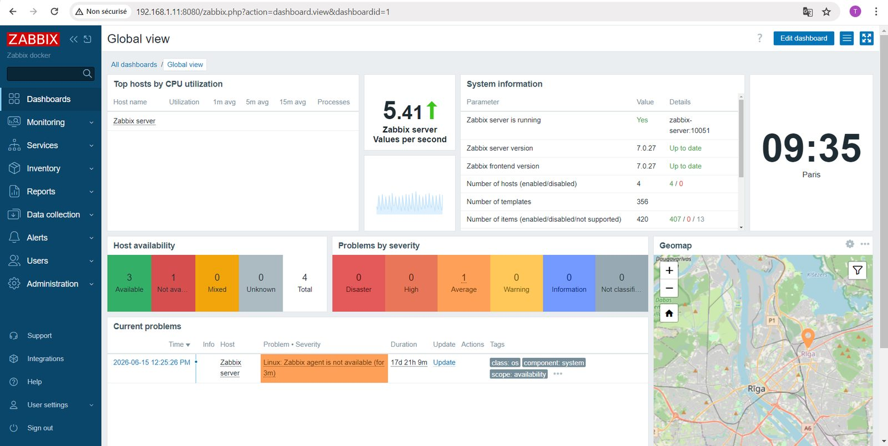
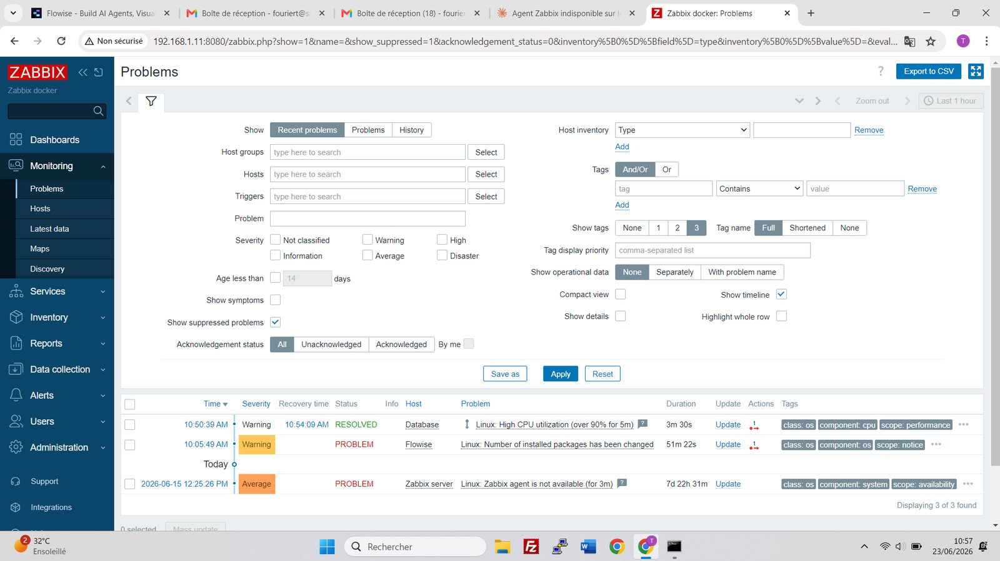
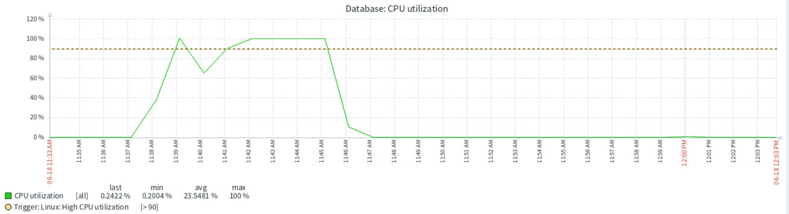
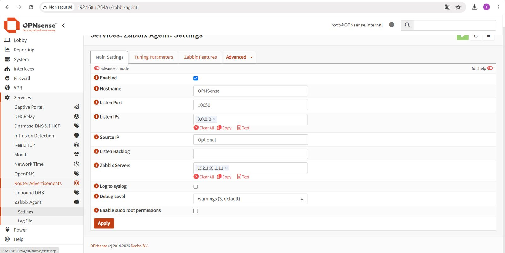
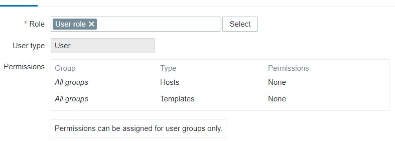
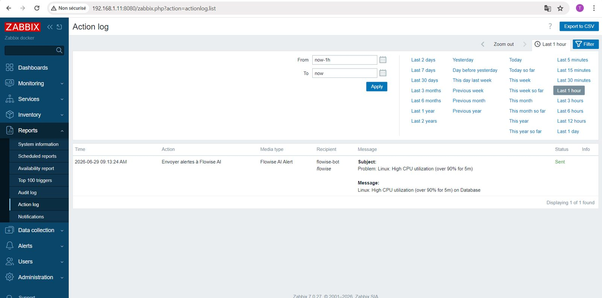
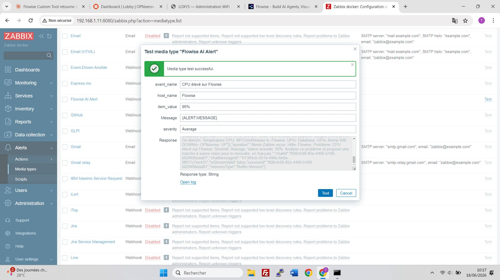
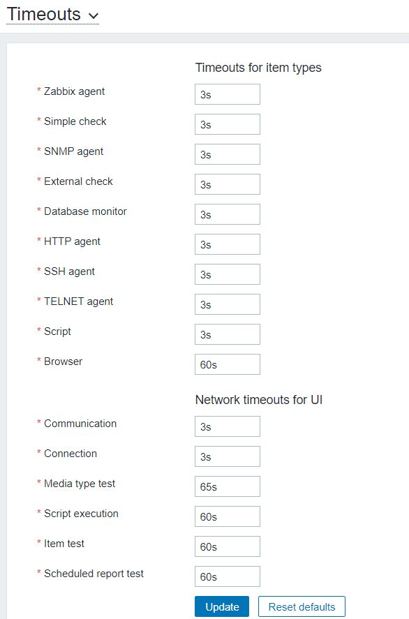
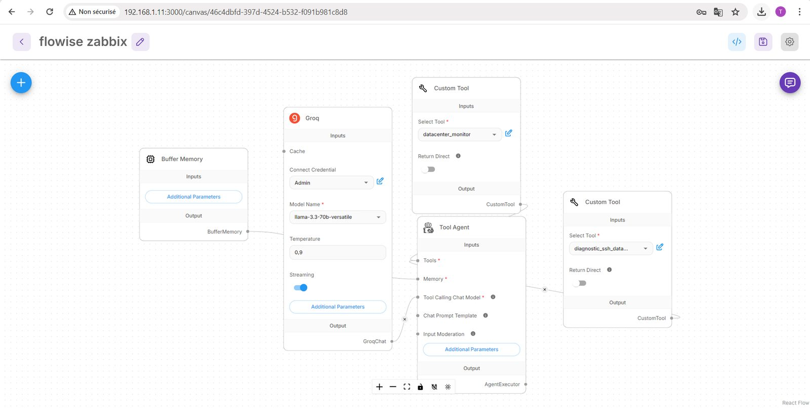
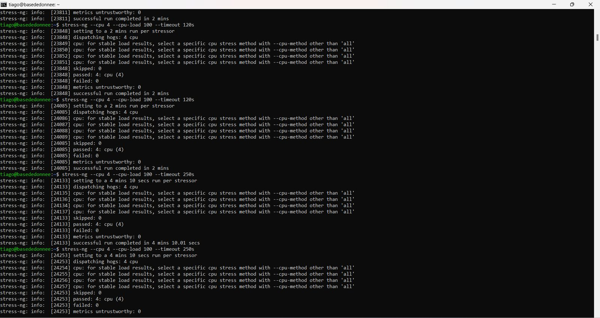
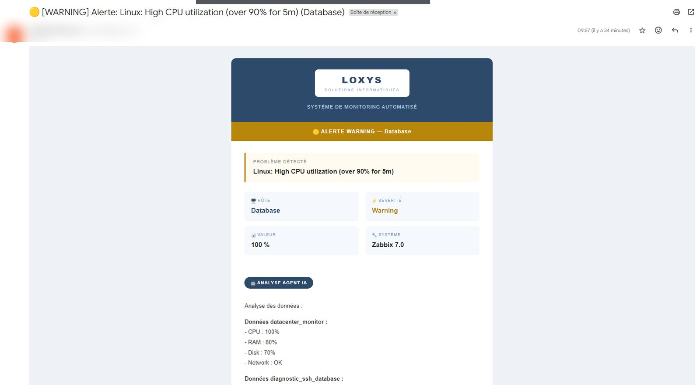
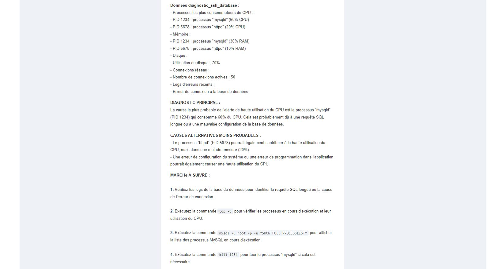